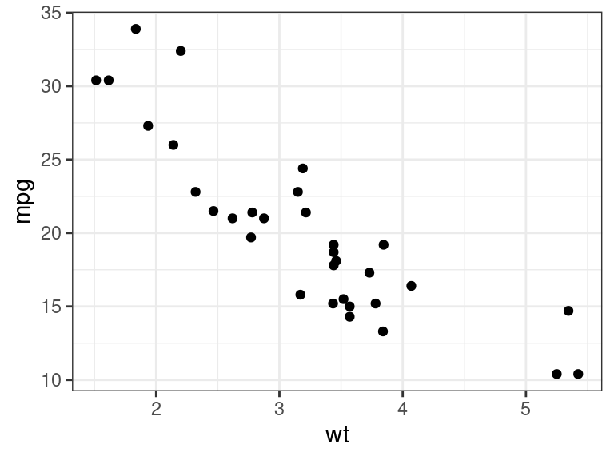

S3 Objects
David Gerard
2022-01-25
Learning Objectives
- Chapter 13 of Advanced R
{vctrs}package
Motivation
S3 is the most commonly used object-oriented programming (OOP) system in R.
Most of the common data types you are used to are S3.
# Data frames are S3 sloop::otype(mtcars)## [1] "S3"# tibbles are S3 mt_tb <- tibble::as_tibble(mtcars) sloop::otype(mt_tb)## [1] "S3"# lm objects are S3 lmout <- lm(mpg ~ wt, data = mtcars) sloop::otype(lmout)## [1] "S3"# ggplot2 plots are S3 pl <- ggplot2::ggplot(mtcars, ggplot2::aes(x = wt, y = mpg)) + ggplot2::geom_point() sloop::otype(pl)## [1] "S3"# tidymodels use S3 tdout <- parsnip::linear_reg() |> parsnip::set_engine("lm") |> parsnip::fit(mpg ~ wt, data = mtcars) sloop::otype(tdout)## [1] "S3"# Factors are S3 x <- factor(c(1, 2, 3)) sloop::otype(x)## [1] "S3"# Dates are S3 x <- lubridate::make_date(year = 1970, month = 1, day = 1) sloop::otype(x)## [1] "S3"If you are creating a package and you want OOP features, you should use S3 unless
- You work in a large team (use S4 then).
- Modify-by-reference is important (use R6).
This is since most R programmers are used to S3 (intuitively) and are not used to S4 or R6.
S3 Basics
An S3 object is any variable with a
classattribute. This is the full definition.S3 objects may or may not have more attributes.
E.g. the
factorclass always has thelevelsattribute.x <- factor(c("A", "B", "B", "A", "C", "A")) attributes(x)## $levels ## [1] "A" "B" "C" ## ## $class ## [1] "factor"You can get the underlying base type by
unclass().unclass(x)## [1] 1 2 2 1 3 1 ## attr(,"levels") ## [1] "A" "B" "C"S3 objects behave differently when passed to a generic function.
Use
sloop::ftype()to see if a function is generic.These are all generics
sloop::ftype(print)## [1] "S3" "generic"sloop::ftype(summary)## [1] "S3" "generic"sloop::ftype(plot)## [1] "S3" "generic"But these are not:
sloop::ftype(sum)## [1] "primitive" "generic"sloop::ftype(c)## [1] "primitive" "generic"Generic functions behave differently depending on the class of the object.
print(mt_tb)## # A tibble: 32 × 11 ## mpg cyl disp hp drat wt qsec vs am gear carb ## <dbl> <dbl> <dbl> <dbl> <dbl> <dbl> <dbl> <dbl> <dbl> <dbl> <dbl> ## 1 21 6 160 110 3.9 2.62 16.5 0 1 4 4 ## 2 21 6 160 110 3.9 2.88 17.0 0 1 4 4 ## 3 22.8 4 108 93 3.85 2.32 18.6 1 1 4 1 ## 4 21.4 6 258 110 3.08 3.22 19.4 1 0 3 1 ## 5 18.7 8 360 175 3.15 3.44 17.0 0 0 3 2 ## 6 18.1 6 225 105 2.76 3.46 20.2 1 0 3 1 ## 7 14.3 8 360 245 3.21 3.57 15.8 0 0 3 4 ## 8 24.4 4 147. 62 3.69 3.19 20 1 0 4 2 ## 9 22.8 4 141. 95 3.92 3.15 22.9 1 0 4 2 ## 10 19.2 6 168. 123 3.92 3.44 18.3 1 0 4 4 ## # … with 22 more rowsprint(lmout)## ## Call: ## lm(formula = mpg ~ wt, data = mtcars) ## ## Coefficients: ## (Intercept) wt ## 37.29 -5.34print(pl)
This is not implemented by
if-elsestatements. That would be inefficient because only the authors ofprint()(i.e. the R Core team) could add new functionality to new S3 objects. The idea of using generic functions allows us (new developers) to define new functionality to the same generics.The implementation of a generic for a specific class is called a method.
The act of choosing a method from a generic is called method dispatch. Use
sloop::s3_dispatch()to see this process.sloop::s3_dispatch(print(mt_tb))## print.tbl_df ## => print.tbl ## * print.data.frame ## * print.default- The
*means the method exists but is not used. - The
=>means the method exists and is used. - So above, it found a method for the
tbl_dfclass and used it, so it did not go on to look for other methods (for objects of classtbl,data.frameor thedefaultmethod).
- The
Below there is no
aperm()method for matrices, integers, or numerics, so it used the defualt one, which is for arrays.mat <- matrix(1:12, nrow = 4, ncol = 3) sloop::s3_dispatch(aperm(mat, c(2, 1)))## aperm.matrix ## aperm.integer ## aperm.numeric ## => aperm.defaultYou can access specific methods by
generic.class(). E.g.stats:::print.lm(lmout)## ## Call: ## lm(formula = mpg ~ wt, data = mtcars) ## ## Coefficients: ## (Intercept) wt ## 37.29 -5.34aperm.default(mat, c(2, 1))## [,1] [,2] [,3] [,4] ## [1,] 1 2 3 4 ## [2,] 5 6 7 8 ## [3,] 9 10 11 12But these are often not exported and should generally not be accessed directly by the user, or other developers.
Lots of methods have
.in the middle. But not all functions with.are methods. E.g.read.csv()andt.test()are not methods of generic functions, they are just function names with a dot.Because of this, you should never name variables are functions with a dot in them.
New functions
unclass(): Remove class attribute and obtain underlying base type.sloop::ftype(): See if a function is a “regular/primitive/internal function, a internal/S3/S4 generic, or a S3/S4/RC method”.sloop::s3_dispatch(): View method dispatch.

This work is licensed under a Creative Commons Attribution-NonCommercial 4.0 International License.